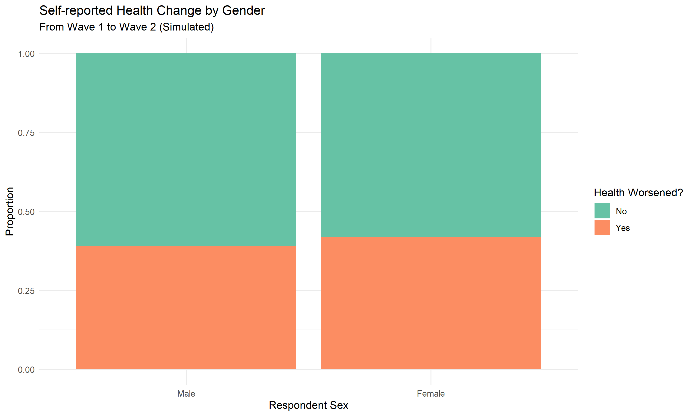

# 核心处理包
# install.packages(c("haven", "tidyverse", "labelled", "mice", "survey"))
library(haven) # 导入 Stata .dta 文件
library(tidyverse) # 数据清洗与处理
library(labelled) # 处理 Stata 的变量标签
library(survey) # 处理抽样权重
library(gtsummary) # 生成三线表CHARLS 数据库使用完全指南
实用操作
数据处理
CHARLS
系统介绍如何使用 R 语言处理中国健康与养老追踪调查（CHARLS）数据，包括数据导入、清洗、多波次合并及权重使用。
CHARLS 数据库简介
中国健康与养老追踪调查 (China Health and Retirement Longitudinal Study, CHARLS) 是一项旨在收集一套代表中国 45 岁及以上中老年人家庭和个人的高质量微观数据，用以分析中国人口老龄化问题，推动老龄化问题的跨学科研究。
为什么选择 CHARLS？
- 国家代表性：样本覆盖全国 28 个省，150 个县级单位，450 个村级单位，涉及约 1.24 万户家庭中的 1.9 万人。
- 纵向追踪：自 2011 年开展首轮调查后，每两年进行一次常规调查（波次），目前已公开多个波次的数据。
- 多维度数据：涵盖个人背景、家庭结构、健康状况、认知功能、医疗支出、工作退休、家庭资产等。
- 国际可比性：调查设计参考了美国健康与退休调查 (HRS) 等国际成熟项目，便于进行跨国比较研究。
环境准备与包安装
在开始处理 CHARLS 数据之前，我们需要安装并加载相关的 R 包。
数据获取与导入
数据获取途径
你可以在 CHARLS 官网 注册并申请下载数据。通常下载得到的是 Stata 格式的 .dta 文件。
导入数据
使用 haven 包的 read_dta() 函数可以完美保留数据中的标签信息，这对于理解变量含义至关重要。
# 示例代码（实际操作时需替换为你的本地路径）
# raw_data <- read_dta("data/charls_2018_demographic.dta")
# 查看数据结构
# glimpse(raw_data)核心工作流：模拟实操
由于 CHARLS 真实数据受版权限制且需要注册，我们将使用模拟数据来演示处理流程。这些模拟数据模仿了 CHARLS 典型的变量命名规则和结构。
1. 模拟数据生成
set.seed(123)
n <- 1000
# 模拟 2011 年数据 (Wave 1)
wave2011 <- tibble(
ID = 1:n,
communityID = sample(101:150, n, replace = TRUE),
rsex = sample(c(1, 2), n, replace = TRUE), # 1:男, 2:女
rabirthy = sample(1940:1965, n, replace = TRUE),
health_status = sample(1:5, n, replace = TRUE), # 1:极好, 5:极差
weight_2011 = runif(n, 0.5, 1.5)
)
# 模拟 2013 年数据 (Wave 2)
wave2013 <- tibble(
ID = sample(1:n, 900), # 模拟失访
health_status = sample(1:5, 900, replace = TRUE),
adl_difficulty = rbinom(900, 1, 0.2), # 日常生活活动能力是否受限
weight_2013 = runif(900, 0.5, 1.5)
)2. 变量清洗与标签处理
CHARLS 原始数据通常使用数字编码。使用 labelled 包可以方便地管理这些值标签。
# 处理性别变量
wave2011 <- wave2011 %>%
mutate(
gender = factor(rsex, levels = c(1, 2), labels = c("Male", "Female")),
age_2011 = 2011 - rabirthy
)
# 设置变量标签（模仿 Stata 样式）
var_label(wave2011$gender) <- "Respondent Sex"
var_label(wave2011$health_status) <- "Self-reported health status"
# 查看带标签的数据
head(wave2011)# A tibble: 6 × 8
ID communityID rsex rabirthy health_status weight_2011 gender age_2011
<int> <int> <dbl> <int> <int> <dbl> <fct> <dbl>
1 1 131 1 1960 4 1.37 Male 51
2 2 115 1 1961 2 0.946 Male 50
3 3 114 2 1962 5 0.538 Female 49
4 4 103 1 1964 2 0.910 Male 47
5 5 142 1 1962 1 0.865 Male 49
6 6 150 1 1943 5 0.977 Male 683. 多波次数据合并 (Longitudinal Merging)
合并波次时，通常使用 ID 作为关键链接变量。
# 左连接：以基线数据为准
combined_data <- left_join(wave2011, wave2013, by = "ID", suffix = c("_w1", "_w2"))
# 查看合并后的样本量
nrow(combined_data)[1] 1000典型分析场景
1. 描述性统计（应用权重）
在 CHARLS 研究中，必须考虑抽样权重以获得代表性的预测。
# 创建调查设计对象
d_design <- svydesign(
ids = ~communityID,
weights = ~weight_2011,
data = combined_data,
nest = TRUE
)
# 使用 gtsummary 结合 survey 包生成加权基线表
combined_data %>%
select(gender, age_2011, health_status_w1) %>%
tbl_summary(
by = gender,
label = list(
age_2011 ~ "Age (Baseline)",
health_status_w1 ~ "Base Health Status"
)
) %>%
add_p() %>%
bold_labels()| Characteristic | Male N = 5161 |
Female N = 4841 |
p-value2 |
|---|---|---|---|
| Age (Baseline) | 59 (52, 65) | 59 (52, 65) | 0.7 |
| Base Health Status | 0.8 | ||
| 1 | 95 (18%) | 91 (19%) | |
| 2 | 130 (25%) | 112 (23%) | |
| 3 | 94 (18%) | 98 (20%) | |
| 4 | 101 (20%) | 101 (21%) | |
| 5 | 96 (19%) | 82 (17%) | |
| 1 Median (Q1, Q3); n (%) | |||
| 2 Wilcoxon rank sum test; Pearson’s Chi-squared test | |||
2. 健康状况变化趋势
# 简单计算健康状况是否恶化
combined_data <- combined_data %>%
mutate(
health_worsened = if_else(health_status_w2 > health_status_w1, "Yes", "No")
)
# 可视化不同性别的健康变化
ggplot(
filter(combined_data, !is.na(health_worsened)),
aes(x = gender, fill = health_worsened)
) +
geom_bar(position = "fill") +
scale_fill_brewer(palette = "Set2") +
labs(
title = "Self-reported Health Change by Gender",
subtitle = "From Wave 1 to Wave 2 (Simulated)",
y = "Proportion",
fill = "Health Worsened?"
) +
theme_minimal()
CHARLS 处理常见问题 (FAQ)
1. 如何处理失访 (Attrition)？
CHARLS 中跨波次观察常有失访现象。常用的处理方法包括： - 完整病例分析 (Complete Case Analysis)：仅保留所有波次都有数据的样本。 - 权重修正：使用失访调整后的权重。 - 多重插补 (Multiple Imputation)：使用 mice 包填补缺失值。
2. 什么是 Harmonized CHARLS？
Gateway to Global Aging Data 提供了经过清洗和标准化的 Harmonized CHARLS 数据。 - 优点：变量名统一（如 r1agey 表示第1波次年龄），缺失值已预处理。 - 缺点：可能不包含原始数据中的所有细节变量。
3. 如何计算年龄？
通常基于调查年份减去出生年份。需要注意 CHARLS 中有农历和阳历出生日期的区分，建议优先使用已清洗好的年龄变量。
总结
CHARLS 数据库是研究中国人口健康问题的金矿。使用 R 语言处理时，建议采用以下流程： 1. 规范载入：使用 haven 保持元数据。 2. 注重标签：时刻检查变量标签确认含义。 3. 考虑权重：在大规模推论时务必使用 survey 包。 4. 关注国际同步：优先尝试 Harmonized 版本以简化清洗。
[!TIP] 资源链接 - CHARLS 官方文档 - Gateway to Global Aging (Harmonized Data) - R
survey包使用手册
参考文献
- Zhao, Y., Hu, Y., Smith, J. P., Strauss, J., & Yang, G. (2014). Cohort profile: the China Health and Retirement Longitudinal Study (CHARLS). International journal of epidemiology, 43(1), 61-68.